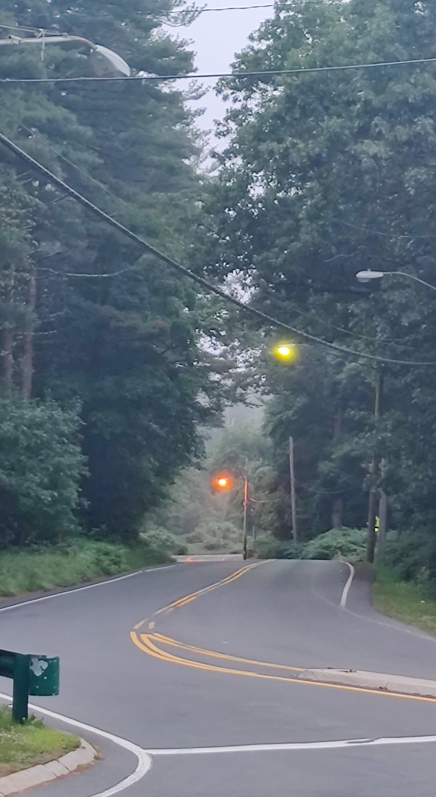

The Emissary did not run, but calmly regarded me, which I must take to be a fair omen
|
Fireflies of the dawn
|
But the morning is gray and cold, so I walk not in the Border Clearing
|

"Mama, I hear people singing and laughing up the hill" "Singing, child?" "They say I should join them in the mist beyond the orange light" "Cover your ears, quickly now!"
|
Those who find a key-sigil that matches the upper-right of this grate may brave the Tunnels
|
Ways into The Green
|
The border between the Two-Legs roads and the Ways of The Green
|
"To the giant's toe bone come we now. For us two-legs, the smallest bone in the pinky toe is around 6 tics, or a bit under a quarter inch,
making that bone roughly one part of three hundred of a person's height. The bone before us is 4 meters or 13 feet,
suggesting this giant was one and one fifth kilometers, or roughly three quarters of a mile tall"
- fragment of paper found in the cabin of Emlen the Hermit
|
A young slug has a morning snack
|
A typical place for trouble to find the unwary
|
While in their cities and streets, it's easy for the Water Wardens to boast that the spirits of The Wood tempt them not
|
After a Season in the Forest, many a Warden finds themselves surrounded, if not entwined. Like the one on the right, here.
|
There is likely some story here, but it was not obvious in the mist of this day.
|
This looks like a path that leads Away. I shall not test it.
|
It is a very Two-legs thing to put some metal near something, and think that will somehow contain it
It really doesn't work that way.
|
On an equinox morn, the sun rises between the two trees on the right here.
|
Green, and mist, and maybe a sense of things moving whereever I wasn't focused on at that moment.
|
Approaching the Lord's Mount
|

The stair to the Lord's Seat
|
The Seat is empty this morning.
|
On other days, the city of Boston is in this direction
|
The back stair to the Lord's Seat
|
So many paths beckon, though some would say they all lead to perdition the same.
|
Some portions of the "Accords" involve the placement of metal on the mount, which of course is a grave Trespass to the Fae.
Rumor was that the man who mounted this sign took sick for months shortly after, as the Fae felt the sign was a poor turn of phrase.
|
In the early years of negotiations between The Fae and The Two-Legs,
Fae who wished to speak in support of accord form would often do so here.
On occasion, One might speak here and sound quite neutral -- a way to show they would say far worse in a different venue.
|
In the days since The Accords, Younger Fae occasionally plant themselves between the Boundaries, as if to defy what was written.
Those older, having seen or felt the Two-Legs' steel, shake their heads sadly.
|
A totem totem that the Two-Legs built, one of the many concessions forced upon The Fae
|
Another favored ornament of the Two-Legs.
|

Emlen the Hermit speculated this lake formed from the stomach or lungs of a rock giant
|
More green and gray and mist, but I saw no movement here, perhaps because of the concrete block
|
The Western Promenade
|
"It's one thing when artfully lure a Two-Legs into the water, quite another when they just wander in, when none of us are around.
So, we had to put a tree in the way."
|
A path from Lost to Gone.
|
One of the few places where the paths are wide enough to quiet the Call of the Woods
|
A gate to the Lake. Gates keep in, and they keep out. Today, it felt like much more of a keep-in Gate.
|
A path to the Two-Legs villages
|
Before The Accords, wind spirits would agitate Those of The Lake, and would sweep down this path to blow and rain upon the villge.
|

If you stand still, in the moments between breaths you may hear echoes of the Fae as they spied from the bushes
|
Exiting The Green
|
"This is what the Two-Legs call gardening?"
|
A young Warden, newly assigned after a tour of duty in the city. If they do well here, they may be posted closer to the forest
|
In the village fields, an eerie emptiness. No wheat nor barley grows here.
|
Get yourself together, Warden! You've seen plenty of litter in your time. Now staff straight and get on with it!
|
Do you want to deal with a spontaneous runic activation? Because this is how you get an SRA.
|
It appears that someone without a key-sigil tried to force their way into the Tunnels
|
A likely dwelling for a creatue of some description
|
The ants have progressed from mere hills to a tower
Here, the story pauses
|
{kind=link}